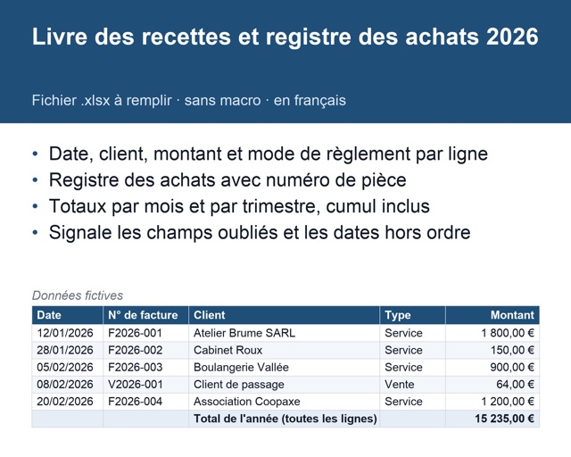
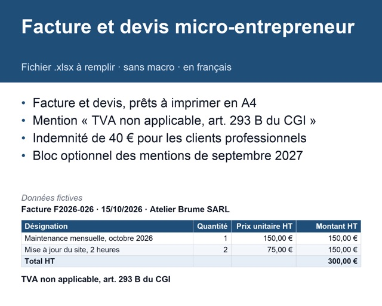
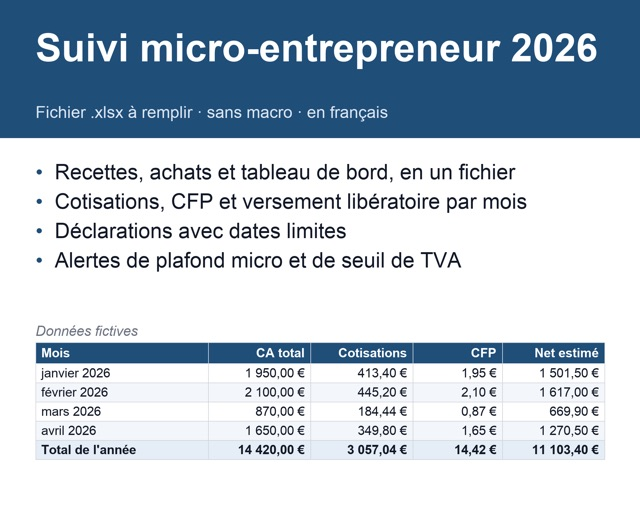
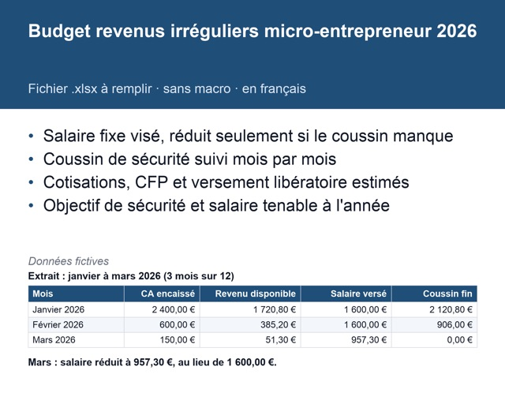
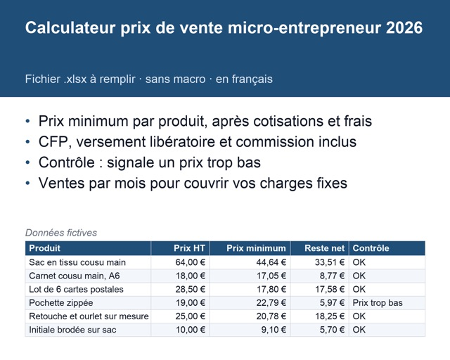
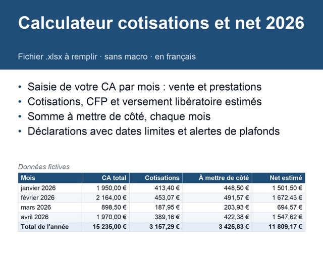

-

Vu dans la vidéo « Mars ou avril ? »
Livre des recettes et registre des achats
Une ligne par encaissement, avec sa date. Les totaux du mois et du trimestre se font tout seuls.
Voir sur Etsy -

Vu dans la vidéo « 4 lignes sur ta facture »
Facture et devis
Un modèle de facture et de devis avec les mentions obligatoires déjà en place. Tu remplis tes infos et celles du client.
Voir sur Etsy -

Vu dans la vidéo « Seuil TVA : 37 500 € / 41 250 € »
Suivi micro-entrepreneur 2026
Le classeur complet : recettes, achats, cotisations estimées, dates de déclaration et alerte à 80 % des seuils.
Voir sur Etsy -

Vu dans la vidéo « Te verser un salaire fixe »
Budget revenus irréguliers
Un salaire fixe chaque mois, payé par un coussin de sécurité, même quand les encaissements varient.
Voir sur Etsy -

Vu dans la vidéo « Arrête de fixer ton prix au feeling »
Calculateur prix de vente
Le prix minimum de chaque produit après cotisations, CFP, versement libératoire et commission de la plateforme.
Voir sur Etsy -

Vu dans la vidéo « Combien mettre de côté »
Calculateur cotisations et net
Ce qu'il faut mettre de côté chaque mois pour l'URSSAF, et ce qui te reste.
Voir sur Etsy
Gratuit
Pas encore prêt à acheter ? L'outil gratuit estime ton net et tes dates de déclaration.
Fichiers d'aide au suivi, pas un conseil fiscal. Taux 2026 publiés par l'URSSAF. Sans lien avec l'URSSAF ni l'administration.